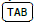

9. Quelques techniques avancées de programmation▲
Ce chapitre présente quelques exemples de techniques avancées dans les trois paradigmes que supporte Python, les programmations procédurale, objet et fonctionnelle.
9-1. Techniques procédurales▲
9-1-1. Le pouvoir de l'introspection▲
C'est un des atouts de Python. On entend par introspection la possibilité d'obtenir des informations sur les objets manipulés par le langage.
9-1-1-a. La fonction help()▲
On peut tout d'abord utiliser la fonction prédéfinie help().
Cette fonction est autodocumentée :
>>> help()
Welcome to Python 3.4 help utility!
If this is your first time using Python, you should definitely check out
the tutorial on the Internet at http://docs.python.org/3.4/tutorial/.
Enter the name of any module, keyword, or topic to get help on writing
Python programs and using Python modules. To quit this help utility and
return to the interpreter, just type "quit".
To get a list of available modules, keywords, symbols, or topics, type
"modules","keywords","symbols", or "topics". Each module also comes
with a one-line summary of what it does; to list the modules whose name
or summary contain a given string such as "spam", type "modules spam".
help> quit
You are now leaving help and returning to the Python interpreter.
If you want to ask for help on a particular object directly from the
interpreter, you can type "help(object)". Executing "help('string')"
has the same effect as typing a particular string at the help> prompt.L'interpréteur IPython propose une aide encore plus efficace grâce à son mécanisme d'autocomplétion contextuelle (touche ) :
In [1]: seq = []
In [2]: seq.
seq.append seq.copy seq.extend seq.insert seq.remove seq.sort
seq.clear seq.count seq.index seq.pop seq.reverse
In [2]: seq.sort?
Type: builtin_function_or_method
String form: <built-in method sort of list object at 0xb5e0c1ac>
Docstring: L.sort(key=None, reverse=False) -> None -- stable sort *IN PLACE*La fonction utilitaire printInfo() filtre les méthodes disponibles de son argument ne commençant pas par _ et affiche les docstrings associées sous une forme plus lisible que help() :
def printInfo(object) :
"""Filtre les méthodes disponibles de <object>."""
methods = [method for method in dir(object)
if callable(getattr(object, method)) and not method.startswith('_')]
for method in methods :
print(getattr(object, method).__doc__)Par exemple, l'appel printInfo([]) affiche la documentation :
L.append(object) -- append object to end
L.count(value) -> integer -- return number of occurrences of value
L.extend(iterable) -- extend list by appending elements from the iterable
L.index(value, [start, [stop]]) -> integer -- return first index of value.
Raises ValueError if the value is not present.
L.insert(index, object) -- insert object before index
L.pop([index]) -> item -- remove and return item at index (default last).
Raises IndexError if list is empty or index is out of range.
L.remove(value) -- remove first occurrence of value.
Raises ValueError if the value is not present.
L.reverse() -- reverse *IN PLACE*
L.sort(cmp=None, key=None, reverse=False) -- stable sort *IN PLACE*;
cmp(x, y) -> -1, 0, 19-1-1-b. Les fonctions type(), dir() et id()▲
Ces fonctions fournissent respectivement le type, tous les noms définis dans l'espace de noms et la localisation mémoire (unique) d'un objet :
>>> li = [1, 2, 3]
>>>
>>> type(li)
<class 'list'>
>>>
>>> dir(li)
['__add__', '__class__', '__contains__', '__delattr__', '__delitem__', '__doc__', '__eq__', '__format__',
'__ge__', '__getattribute__', '__getitem__', '__gt__', '__hash__', '__iadd__', '__imul__', '__init__',
'__iter__', '__le__', '__len__', '__lt__', '__mul__', '__ne__', '__new__', '__reduce__', '__reduce_ex__',
'__repr__', '__reversed__', '__rmul__', '__setattr__', '__setitem__', '__sizeof__', '__str__', '__subclasshook__',
'append', 'count', 'extend', 'index', 'insert', 'pop', 'remove', 'reverse', 'sort']
>>>
>>> id(li)
30748011649-1-1-c. Les fonctions locals() et globals()▲
Comme nos l'avons déjà vu chapitre 5.3.1Portée des objets, ces fonctions retournent respectivement le dictionnaire des noms locaux (globaux) au moment de leur appel.
9-1-1-d. Le module sys▲
Ce module fournit nombre d'informations générales, entre autres :
>>> import sys
>>>
>>> sys.executable
'/usr/bin/python3'
>>>
>>> sys.platform
'linux2'
>>>
>>> sys.version
'3.2.3 (default, Oct 19 2012, 20:13:42) \n[GCC 4.6.3]'
>>>
>>> sys.argv
['']
>>>
>>> sys.path
['', '/usr/lib/python3.2', '/usr/lib/python3.2/plat-linux2', '/usr/lib/python3.2/lib-dynload', '/usr/local/lib/python3.2/dist-packages', '/usr/lib/']
>>> sys.modules
{'reprlib': <module 'reprlib' from '/usr/lib/python3.2/reprlib.py'>, 'heapq': <module 'heapq' from '/usr/lib/python3.2/heapq.py'>,
'sre_compile': <module 'sre_compile' from '/usr/lib/python3.2/sre_compile.py'>,
…9-1-2. Gestionnaire de contexte (ou bloc gardé)▲
Cette syntaxe simplifie le code en assurant que certaines opérations sont exécutées avant et après un bloc d'instructions donné. Illustrons ce mécanisme sur un exemple classique où il importe de fermer le fichier utilisé :
9-1-3. Utiliser un dictionnaire pour lancer des fonctions ou des méthodes▲
L'idée est d'exécuter différentes parties de code en fonction de la valeur d'une variable de contrôle. On peut se servir de cette technique pour implémenter un menu textuel :
animaux = []
nombre_de_felins = 0
def gererChat() :
global nombre_de_felins
print("Miaou")
animaux.append("félin")
nombre_de_felins += 1
def gererChien() :
print("Ouah")
animaux.append("canidé")
def gererOurs() :
print("Attention au *OUILLE* !")
animaux.append("plantigrade")
# ~~~~~~~~~~~~~~~~~~~~~~~~~~~~~~~~~~~~~~~~~~~~~~~~~~~~~~~~~~~~~~~~~~~~~~~~~~~~
dico = {
"chat" : gererChat,
"chien" : gererChien,
"ours" : gererOurs
}
betes = ["chat", "ours", "chat", "chien"] # une liste d'animaux rencontrés
for bete in betes :
dico[bete]() # appel de la fonction correspondante
nf = nombre_de_felins
print("nous avons rencontré {} félin(s)".format(nf))
print("Les animaux rencontrés sont : {}".format(', '.join(animaux), end="")
"""
Miaou
Attention au *OUILLE* !
Miaou
Ouah
nous avons rencontré 2 félin(s)
Les animaux rencontrés sont : félin, plantigrade, félin, canidé
"""9-1-4. Les fonctions récursives▲
Une fonction récursive comporte un appel à elle-même.
Plus précisément, une fonction récursive doit respecter les trois propriétés suivantes :
- Une fonction récursive contient un cas de base ;
- Une fonction récursive doit modifier son état pour se ramener au cas de base ;
- Une fonction récursive doit s'appeler elle-même.
Par exemple, trier un tableau de kitxmlcodeinlinelatexdvpNfinkitxmlcodeinlinelatexdvp éléments par ordre croissant, c'est extraire le plus petit élément puis trier le tableau restant à kitxmlcodeinlinelatexdvpN-1finkitxmlcodeinlinelatexdvp éléments.
Un algorithme classique très utile est la méthode de Horner qui permet d'évaluer efficacement un polynôme de degré kitxmlcodeinlinelatexdvpnfinkitxmlcodeinlinelatexdvp en une valeur donnée kitxmlcodeinlinelatexdvpx_0finkitxmlcodeinlinelatexdvp, en remarquant que cette réécriture ne contient plus que n multiplications :
kitxmlcodelatexdvpp(x_0) = ((\dots ((a_n x_0 + a_{n-1})x_0 + a_{n-2})x_0 + \dots)x_0 + a_1)x_0) + a_0finkitxmlcodelatexdvpVoici une implémentation récursive de l'algorithme de Horner dans laquelle le polynôme kitxmlcodeinlinelatexdvppfinkitxmlcodeinlinelatexdvp est représenté par la liste de ses coefficients kitxmlcodeinlinelatexdvp[a_0, \dots, a_n]finkitxmlcodeinlinelatexdvp :
>>> def horner(p, x):
... if len(p) == 1:
... return p[0]
... p[-2] += x * p[-1]
... return horner(p[:-1], x)
...
>>> horner([5, 0, 2, 1], 2) # x**3 + 2*x**2 + 5, en x = 2
21Les fonctions récursives sont souvent utilisées pour traiter les structures arborescentes comme les répertoires dans les systèmes de fichiers des disques durs.
Voici l'exemple d'une fonction qui affiche récursivement les fichiers d'un répertoire fourni en paramètre :
#-*- coding : utf8 -*-
from os import listdir
from os.path import isdir, join
def listeFichiersPython(repertoire) :
"""Affiche récursivement les fichiers Python à partir de <repertoire>."""
noms = listdir(repertoire)
for nom in noms :
if nom in (".", "..") :
continue
nom_complet = join(repertoire, nom)
if isdir(nom_complet) :
listeFichiersPython(nom_complet)
elif nom.endswith(".py") or nom.endswith(".pyw") :
print("Fichier Python :", nom_complet)
listeFichiersPython("/home/bob/Tmp")Dans cette définition, on commence par constituer dans la variable noms la liste des fichiers et répertoires du répertoire donné en paramètre. Puis, dans une boucle for, tant que l'élément examiné est un répertoire, on ré-appelle la fonction sur lui pour descendre dans l'arborescence de fichiers tant que la condition terminale if nom in (".", ".."): est fausse.
Le résultat produit est :
Fichier Python : /home/bob/Tmp/parfait_chanceux.py
Fichier Python : /home/bob/Tmp/recursif.py
Fichier Python : /home/bob/Tmp/parfait_chanceux_m.py
Fichier Python : /home/bob/Tmp/verif_m.py
Fichier Python : /home/bob/Tmp/Truc/Machin/tkPhone_IHM.py
Fichier Python : /home/bob/Tmp/Truc/Machin/tkPhone.py
Fichier Python : /home/bob/Tmp/Truc/calculate.py
Fichier Python : /home/bob/Tmp/Truc/tk_variable.py9-1-4-a. La récursivité terminale▲
On dit qu'une fonction f est récursive terminale, si tout appel récursif est de la forme return f(…).
On parle alors d'appel terminal.
Python permet la récursivité, mais n'optimise pas automatiquement les appels terminaux. Il est donc possible(32) d'atteindre la limite arbitraire fixée à 1000 appels.
On peut pallier cet inconvénient de deux façons. Nous allons illustrer cette stratégie sur un exemple canonique, la factorielle.
La première écriture est celle qui découle directement de la définition de la fonction :
def factorielle(n) :
"""Version récursive non terminale."""
if n == 0:
return 1
else :
return n * factorielle(n-1)On remarque immédiatement (return n * factorielle(n-1)) qu'il s'agit d'une fonction récursive non terminale. Or une fonction récursive terminale est en théorie plus efficace (mais souvent moins facile à écrire) que son équivalent non terminale : il n'y a qu'une phase de descente et pas de phase de remontée.
La méthode classique pour transformer cette fonction en un appel récursif terminal est d'ajouter un argument d'appel jouant le rôle d'accumulateur. D'où le code :
def factorielleTerm(n, accu=1) :
"""Version récursive terminale."""
if n == 0:
return accu
else :
return factorielleTerm(n-1, n*accu)La seconde stratégie est d'essayer de transformer l'écriture récursive de la fonction par une écriture itérative. La théorie de la calculabilité montre qu'une telle transformation est toujours possible à partir d'une fonction récursive terminale, ce qu'on appelle l'opération de dérécursivation. D'où le code :
def factorielleDerec(n, accu=1) :
"""Version dérécursivée."""
while n > 0:
accu *= n
n -= 1
return accu9-1-5. Les listes définies en compréhension▲
Les listes définies en compréhension, souvent appelées compréhension de listes, permettent de générer ou de modifier des collections de données par une écriture lisible, simple et performante.
Cette construction syntaxique se rapproche de la notation utilisée en mathématiques :
kitxmlcodeinlinelatexdvp\{x^2 | x \in[2,11[\} \Leftrightarrowfinkitxmlcodeinlinelatexdvp [x**2 for x in range(2, 11)] kitxmlcodeinlinelatexdvp\Rightarrowfinkitxmlcodeinlinelatexdvp [4, 9, 16, 25, 36, 49, 64, 81, 100]
Une liste en compréhension est équivalente à une boucle for qui construirait la même liste en utilisant la méthode append().
Les listes en compréhension sont utilisables sous trois formes.
Première forme expression d'une liste simple de valeurs :
result1 = [x+1 for x in une_seq]
# a le même effet que :
result2 = []
for x in une_seq :
result2.append(x+1)Deuxième forme expression d'une liste de valeurs avec filtrage :
result3 = [x+1 for x in une_seq if x > 23]
# a le même effet que :
result4 = []
for x in une_seq :
if x > 23:
result4.append(x+1)Troisième forme expression d'une combinaison de listes de valeurs :
result5 = [x+y for x in une_seq for y in une_autre]
# a le même effet que :
result6 = []
for x in une_seq :
for y in une_autre :
result6.append(x+y)Exemples utilisations très pythoniques :
valeurs_s = ["12", "78", "671"]
# conversion d'une liste de chaînes en liste d'entiers
valeurs_i = [int(i) for i in valeurs_s] # [12, 78, 671]
# calcul de la somme de la liste avec la fonction intégrée sum
print(sum([int(i) for i in valeurs_s])) # 761
# a le même effet que :
s = 0
for i in valeurs_s :
s = s + int(i)
print(s) # 761
# Initialisation d'une liste 2D
multi_liste = [[0]*2 for ligne in range(3)]
print(multi_liste) # [[0, 0], [0, 0], [0, 0]]Autre exemple :
>>> C_deg = range(-20, 41, 5)
>>> F_deg = [(9.0/5)*c + 32 for c in C_deg]
>>> table = [C_deg, F_deg]
>>> for i in range(len(table[0])):
... print(table[0][i], "=>", table[1][i])
...
-20 => -4.0
-15 => 5.0
-10 => 14.0
-5 => 23.0
0 => 32.0
5 => 41.0
10 => 50.0
15 => 59.0
20 => 68.0
25 => 77.0
30 => 86.0
35 => 95.0
40 => 104.09-1-6. Les dictionnaires définis en compréhension▲
Comme pour les listes, on peut définir des dictionnaires en compréhension :
Notons l'utilisation des accolades et du deux-points caractéristiques de la syntaxe du dictionnaire.
9-1-7. Les ensembles définis en compréhension▲
De même, on peut définir des ensembles en compréhension :
Dans ce cas les accolades sont caractéristiques de la syntaxe de l'ensemble.
9-1-8. Les générateurs et les expressions génératrices▲
9-1-8-a. Les générateurs▲
Un générateur est une fonction qui mémorise son état au moment de retourner une valeur.
La transmission d'une valeur s'effectue en utilisant le mot clé yield.
Les générateurs fournissent un moyen de générer des exécutions paresseuses, ce qui signifie qu'elles ne calculent que les valeurs réellement demandées. Ceci peut s'avérer beaucoup plus efficace (en termes de mémoire) que le calcul, par exemple, d'une énorme liste en une seule fois.
Techniquement, un générateur fonctionne en deux temps. D'abord, au lieu de retourner une valeur avec le mot clé return, la fonction qui doit servir de générateur produit une valeur et se met en pause dès qu'elle rencontre le mot clé yield.
Ensuite, à l'utilisation du générateur, le corps de la fonction est exécuté lors des appels explicites à la méthode next() ou implicites dans une boucle for.
Voici un exemple de générateur qui fournit un compteur d'entiers (initialisé à 0) inférieurs ou égaux à l'argument du générateur :
def counter(maximum) :
"""génère des entiers inférieurs ou égaux à <maximum>."""
i = 0
while True :
yield i
if i == maximum : # arrêt de générateur
return
i = i + 1
for val in counter(5) :
print(val, end="")Ce qui produit :
0 1 2 3 4 59-1-8-b. Les expressions génératrices▲
Une expression génératrice possède une syntaxe presque identique à celle des listes en compréhension ; la différence est qu'une expression génératrice est entourée de parenthèses.
9-1-8-c. Utilisation▲
Les expressions génératrices (souvent appelée « genexp ») sont aux générateurs ce que les listes en compréhension sont aux fonctions. Bien qu'il soit transparent, le mécanisme du yield vu ci-dessus est encore en action.
Par exemple l'expression suivante génère la création d'un million de valeurs en mémoire avant de commencer la boucle :
for i in [x**2 for x in range(1000000)]:Alors que dans l'expression suivante, la boucle commence immédiatement et ne génère les valeurs qu'au fur et à mesure des demandes :
for i in (x**2 for x in range(1000000)) :Voici un autre exemple : une genexp de recherche d'un motif dans un fichier, analogue à un grep simplifié(33) :
>>> with open('.bash_aliases') as f:
... file = f.readlines()
...
>>> lines = (line.strip() for line in file if "alias" in line)
>>> for line in lines:
... line
...
'# some more aliases'
"alias ll='ls -alF'"
"alias la='ls -A'"
"alias l='ls -CF'"
"alias c='clear'"
"alias p='~/ShellScripts/a2ps_UTF8'"
"alias ipq='ipython qtconsole &'"
"alias nb='ipython notebook &'"
"alias qt='ipython qtconsole &'"
'alias kie=\'find ~/Phi1/ -name "*.tex" | xargs grep\''9-1-9. Les fonctions incluses▲
La syntaxe de définition des fonctions en Python permet tout à fait d'emboîter leur définition. Distinguons deux cas d'emploi :
-
idiome de la fonction fabrique renvoyant une fermeture :
Sélectionnez>>>defcreer_plus(ajout): ..."""Fonction 'fabrique'."""...defplus(increment): ..."""Fonction 'fermeture' : utilise des noms locaux à creer_plus()."""...returnincrement+ajout ...returnplus ...>>>>>>p=creer_plus(23)>>>q=creer_plus(42)>>>>>>print("p(100) =",p(100))('p(100) =',123)>>>print("q(100) =",q(100))('q(100) =',142) - fonction fabrique renvoyant une classe :
>>> class CasNormal:
... def uneMethode(self):
... print("normal")
...
>>> class CasSpecial:
... def uneMethode(self):
... print("spécial")
...
>>> def casQuiConvient(estNormal=True):
... """Fonction fabrique renvoyant une classe."""
... if estNormal:
... return CasNormal()
... else:
... return CasSpecial()
...
>>>
>>> une_instance = casQuiConvient()
>>> une_instance.uneMethode()
normal
>>> une_instance = casQuiConvient(False)
>>> une_instance.uneMethode()
spécial9-1-10. Les décorateurs▲
Les décorateurs permettent d'encapsuler un appel et donc d'effectuer des pré ou des posttraitements lors de l'appel d'une fonction, d'une méthode ou d'une classe.
Soit deco() un décorateur. Pour « décorer » une fonction on écrit :
def deco() :
…
@deco
def fonction(arg1, arg2, ...) :
passUne fonction peut être multidécorée :
def f1() :
…
def f2() :
…
def f3() :
…
@f1 @f2 @f3
def g() :
passVoici un exemple simple :
def unDecorateur(f) :
cptr = 0
def _interne(*args, **kwargs) :
nonlocal cptr
cptr = cptr + 1
print("Fonction décorée :", f.__name__, ". Appel numéro :", cptr)
return f(*args, **kwargs)
return _interne
@unDecorateur
def uneFonction(a, b) :
return a + b
def autreFonction(a, b) :
return a + b
# programme principal ===============================================
## utilisation d'un décorateur
print(uneFonction(1, 2))
## utilisation de la composition de fonction
autreFonction = unDecorateur(autreFonction)
print(autreFonction(1, 2))
print(uneFonction(3, 4))
print(autreFonction(6, 7))
"""
Fonction décorée : uneFonction. Appel numéro : 1
3
Fonction décorée : autreFonction. Appel numéro : 1
3
Fonction décorée : uneFonction. Appel numéro : 2
7
Fonction décorée : autreFonction. Appel numéro : 2
13
"""9-2. Techniques objets▲
Comme nous l'avons vu lors du chapitre précédent, Python est un langage complètement objet. Tous les types de base ou dérivés sont en réalité des types abstraits de données implémentés sous forme de classe.
9-2-1. Les Functors▲
En Python un objet fonction ou functor est une référence à tout objet appelable(34) : fonction, fonction anonyme lambda(35), méthode, classe. La fonction prédéfinie callable() permet de tester cette propriété :
>>> def maFonction():
... print('Ceci est"appelable"')
...
>>> callable(maFonction)
True
>>> chaine = 'Une chaîne'
>>> callable(chaine)
FalseIl est possible de transformer les instances d'une classe en functor si la méthode spéciale __call__() est définie dans la la classe :
>>> class A:
... def __init__(self):
... self.historique = []
... def __call__(self, a, b):
... self.historique.append((a, b))
... return a + b
...
>>> a = A()
>>> a(1, 2)
3
>>> a(3, 4)
7
>>> a(5, 6)
11
>>> a.historique
[(1, 2), (3, 4), (5, 6)]9-2-2. Les accesseurs▲
9-2-2-a. Le problème de l'encapsulation▲
Dans le paradigme objet, l'état d'un objet est privé, les autres objets n'ont pas le droit de le consulter ou de le modifier.
Classiquement, on distingue les visibilités suivantes :
- publique ;
- protégée ;
- privée.
On peut néanmoins modifier cet état de fait.
Lorsqu'un nom est préfixé par un caractère souligné, il est conventionnellement réservé à un usage interne (privé). Mais Python n'oblige à rien(36), c'est au développeur de respecter la convention !
On peut également préfixer un nom par deux caractères souligné(37), ce qui permet d'éviter les collisions de noms dans le cas où un même attribut serait défini dans une sous-classe. Le renommage a comme effet de bord de rendre l'accès à cet attribut plus difficile de l'extérieur de la classe qui le définit, mais cette protection reste déclarative et n'offre pas une sécurité absolue.
9-2-2-b. La solution property▲
Le principe de l'encapsulation est mis en œuvre par la notion de propriété.
Une propriété (property) est un attribut d'instance possédant des fonctionnalités spéciales.
Deux syntaxes implémentent cette solution.
La première définit explicitement la propriété x et ses quatre paramètres (dans l'ordre : méthode de lecture, méthode de modification, méthode de suppression, chaîne de documentation) :
# !/usr/bin/python3
#-*- coding : utf-8 -*-
# fichier : property.py
class C :
def __init__(self) :
self._ma_propriete = None
def getx(self) :
"""getter."""
return self._x
def setx(self, value) :
"""setter."""
self._x = value
def delx(self) :
"""deleter."""
del self._x
x = property(getx, setx, delx, "Je suis la propriété 'x'.")
# autotest =========================================================
if __name__ == '__main__' :
test = C()
test.x = 10 # setter
print(test.x) # getter
print(C.x.__doc__) # documentation
"""
10
Je suis la propriété 'x'.
"""La seconde, à préférer, car plus simple, utilise la syntaxe des décorateurs. On remarque que la chaîne de documentation de la property est ici la docstring de la définition de la propriété x :
# !/usr/bin/python3
#-*- coding : utf-8 -*-
# fichier : property2.py
class C :
def __init__(self) :
self._x = None
@property
def x(self) :
"""Je suis la propriété 'x'."""
return self._x
@x.setter
def x(self, value) :
self._x = value
@x.deleter
def x(self) :
del self._x
# autotest =========================================================
if __name__ == '__main__' :
test = C()
test.x = 10 # setter
print(test.x) # getter
print(C.x.__doc__) # documentation
"""
10
Je suis la propriété 'x'.
"""9-2-2-c. Un autre exemple : la classe Cercle▲
Schéma de conception : nous allons tout d'abord définir une classe Point que nous utiliserons comme classe de base de la classe Cercle.
Voici le code de la classe Point :
class Point :
def __init__(self, x=0, y=0) :
self.x, self.y = x, y
@property
def distance_origine(self) :
return math.hypot(self.x, self.y)
def __eq__(self, other) :
return self.x == other.x and self.y == other.y
def __str__(self) :
return "({0.x !s}, {0.y !s})".format(self)L'utilisation de property permet un accès en lecture seule au résultat de la méthode distance_origine() considérée alors comme un simple attribut (car on l'utilise sans parenthèse) :
p1, p2 = Point(), Point(3, 4)
print(p1 == p2) # False
print(p2, p2.distance_origine) # (3, 4) 5.0De nouveau, les méthodes renvoyant un simple flottant seront utilisées comme des attributs grâce à property :
class Cercle(Point) :
def __init__(self, rayon, x=0, y=0) :
super().__init__(x, y)
self.rayon = rayon
@property
def aire(self) : return math.pi * (self.rayon ** 2)
@property
def circonference(self) : return 2 * math.pi * self.rayon
@property
def distance_bord_origine(self) :
return abs(self.distance_origine - self.rayon)Voici la syntaxe permettant d'utiliser la méthode rayon comme un attribut en lecture-écriture. Remarquez que la méthode rayon() retourne l'attribut protégé : __rayon qui sera modifié par le setter (la méthode modificatrice) :
@property
def rayon(self) :
return self.__rayon
@rayon.setter
def rayon(self, rayon) :
assert rayon > 0, "rayon strictement positif"
self.__rayon = rayonExemple d'utilisation des instances de Cercle :
def __eq__(self, other) :
return (self.rayon == other.rayon
and super().__eq__(other))
def __str__(self) :
return ("{0.__class__.__name__}({0.rayon !s}, {0.x !s},"
"{0.y !s})".format(self))
if __name__ == "__main__" :
c1 = Cercle(2, 3, 4)
print(c1, c1.aire, c1.circonference)
# Cercle(2, 3, 4) 12.5663706144 12.5663706144
print(c1.distance_bord_origine, c1.rayon) # 3.0 2
c1.rayon = 1 # modification du rayon
print(c1.distance_bord_origine, c1.rayon) # 4.0 19-2-3. Le duck typing et les annotations▲
Il existe un style de programmation très pythonique appelé duck typing :
« S'il marche comme un canard et cancane comme un canard, alors c'est un canard ! »
Cela signifie que Python ne s'intéresse qu'au comportement des objets. Si des objets offrent la même API (interface de programmation), l'utilisateur peut employer les mêmes méthodes :
>>> class Person:
... def help(self):
... print('Heeeeeeelp!')
...
>>> class Duck:
... def help(self):
... print('Quaaaaaaaack!')
...
>>> class SomethingElse:
... pass
...
>>> def inTheForest(x):
... x.help()
...
>>> donald = Duck()
>>> john = Person()
>>> who = SomethingElse()
>>>
>>> for thing in [donald, john, who]:
... try:
... inTheForest(thing)
... except AttributeError:
... print("M'enfin ?")
Quaaaaaaaack!
Heeeeeeelp!
M'enfin ?Un autre exemple :
>>> def calcule(a, b, c):
... return (a + b) * c
...
>>> x = calcule(1, 2, 3)
>>> y = calcule('Hey-', 'Ho! ', 3)
>>> x
9
>>> y
'Hey-Ho! Hey-Ho! Hey-Ho! '
>>> z = calcule('a', 'b', 'c')
Traceback (most recent call last):
File "<stdin>", line 1, in <module>
File "<stdin>", line 2, in calcule
TypeError: can't multiply sequence by non-int of type 'str'Dans le dernier cas, on voit qu'il y a un problème quand on reçoit un type inattendu : le programme s'arrête en erreur à l'exécution. C'est bien là la différence avec les langages à typage statique où toute erreur de type est décelée dès la compilation.
Python est un langage très souple : la nature des données est dynamiquement découverte à l'exécution, ce qui offre plusieurs avantages :
- on peut utiliser le « duck typing » : le code est court et clair ;
- le langage est très facile à apprendre.
Mais, on l'a vu, des désagréments persistent… Les annotations ont été pensées pour corriger ce point.
# annotation simple et par défaut des paramètres :
def foo1(a : <expression>, b : <expression>=5) :
…
# annotations pour *args et **kwargs :
def foo2(*args : <expression>, **kwargs : <expression>) :
…
# annotation du type de retour :
def foo3() -> <expression> :
…Les annotations permettent de fournir des informations supplémentaires. Or, c'est important, ces informations optionnelles n'auront aucun impact sur l'exécution du code, mais des outils tierces parties pourront les utiliser pour par exemple :
- faire de la vérification de type : on outrepasse alors le duck typing pour fixer un type précis, optimisé pour un usage particulier ;
- fournir une aide aux éditeurs de codes ;
- offrir un complément à la documentation des docstrings ;
- …
Voici un exemple d'annotation :
>>> def ma_fonction(param1: 'Une annotation', param2: 2 + 3, param3: 'Autre annotation'='valeur_par_défaut'):
... print(param1, param2, param3)
...
>>> ma_fonction(1, 2, 3) # aucun changement du comportement
1 2 3
>>> ma_fonction(1, 2)
1 2 valeur_par_défaut
>>> ma_fonction.__annotations__ # accès aux annotations
{'param3': 'Autre annotation', 'param2': 5, 'param1': 'Une annotation'}9-3. Techniques fonctionnelles▲
9-3-1. Directive lambda▲
Issue de langages fonctionnels (comme Lisp), la directive lambda permet de définir un objet fonction anonyme dont le bloc d'instructions est limité à une expression dont l'évaluation fournit la valeur de retour de la fonction.
lambda [parameters] : expression
Par exemple cette fonction retourne s si son argument est différent de 1, une chaîne vide sinon :
>>> s = lambda x: "" if x == 1 else "s"
>>> s(3)
's'
>>> s(1)
''Autres exemples illustrant les différences de syntaxe fonction/lambda :
>>> def f(x):
... return x**2
...
>>> print(f(8))
64
>>>
>>> g = lambda x : x**2
>>> print(g(8))
649-3-2. Les fonctions map, filter et reduce▲
La programmation fonctionnelle est un paradigme de programmation qui considère le calcul en tant qu'évaluation de fonctions mathématiques. Elle souligne l'application des fonctions, contrairement au modèle de programmation impérative qui met en avant les changements d'état(38). Elle repose sur trois concepts : mapping, filtering et reducing qui sont implémentés en Python par trois fonctions : map(), filter() et reduce().
La fonction map() :
map() applique une fonction à chaque élément d'une séquence et retourne un itérateur :
>>> map(lambda x:x, range(10))
<map object at 0x7f3a80104f50>
>>> list(map(lambda x:x, range(10)))
[0, 1, 2, 3, 4, 5, 6, 7, 8, 9]On remarque que map() peut être remplacée par un générateur en compréhension.
La fonction filter() :
filter() construit et renvoie un itérateur sur une liste qui contient tous les éléments de la séquence initiale répondant au critère : function(element) == True :
De même filter() peut être remplacée par un générateur en compréhension.
La fonction reduce() :
reduce() est une fonction du module functools. Elle applique de façon cumulative une fonction de deux arguments aux éléments d'une séquence, de gauche à droite, de façon à réduire cette séquence à une seule valeur qu'elle renvoie :
>>> def somme(x, y):
... print x, '+', y
... return x + y
...
>>> reduce(somme, [1, 2, 3, 4])
1 + 2
3 + 3
6 + 4
10
>>> sum([1, 2, 3, 4])
10La fonction reduce() peut être remplacée par une des fonctions suivantes : all(), any(), max(), min() ou sum().
9-3-3. Les applications partielles de fonctions▲
Issue de la programmation fonctionnelle, une PFA (application partielle de fonction) de n paramètres prend le premier argument comme paramètre fixe et retourne un objet fonction (ou instance) utilisant les n-1 arguments restants.
Les PFA sont utiles dans les fonctions de calcul comportant de nombreux paramètres. On peut en fixer certains et ne faire varier que ceux sur lesquels on veut agir :
>>> from functools import partial
>>> def f(m, c, d, u):
... return 1000*m + 100*c + 10*d + u
...
>>> f(1, 2, 3, 4)
1234
>>> g = partial(f, 1, 2, 3)
>>> g(4)
1234
>>> h = partial(f, 1, 2)
>>> h(3, 4)
1234Elles sont aussi utiles pour fournir des modèles partiels de widgets, qui ont souvent de nombreux paramètres. Dans l'exemple suivant, on redéfinit la classe Button en fixant certains de ses attributs (qui peuvent toujours être surchargés) :
from functools import partial
import tkinter as tk
root = tk.Tk()
# instanciation partielle de classe :
MonBouton = partial(tk.Button, root, fg='blue', bg='yellow')
MonBouton(text="Bouton 1").pack()
MonBouton(text="Bouton 2").pack()
MonBouton(text="QUITTER", bg='orange', fg='black', command=root.quit)
.pack(fill=tk.X, expand=True)
root.title("PFA !")
root.mainloop()Ce résultat est illustré Fig. 9.3.
9-4. La persistance et la sérialisation▲
La persistance consiste à sauvegarder des données afin qu'elles survivent à l'arrêt de l'application.
On peut distinguer deux étapes :
- la sérialisation et la désérialisation ;
- le stockage et l'accès.
La sérialisation est le processus de conversion d'un ensemble d'objets en un flux d'octets.
La désérialisation est le processus inverse qui recrée les données d'origine.
Le stockage utilise soit des fichiers, soit des bases de données.
Examinons des exemples simples.
9-4-1. Sérialisation avec pickle et json▲
9-4-1-a. Le module pickle▲
L'intérêt du module pickle est sa simplicité. Par contre, ce n'est pas un format utilisé dans d'autres langages, il n'est utile que tant que l'on reste dans le monde Python.
On peut utiliser une chaîne pour sérialiser, mais l'usage le plus commun est d'utiliser un fichier ouvert en mode binaire (contrairement au mode texte que l'on a déjà vu cf. § 4.7Fichiers textuels), avec le mode "wb". Par exemple pour un dictionnaire :
import pickle
favorite_color = {"lion": "jaune", "fourmi": "noire", "caméléon": "variable"}
# stocke ses données dans un fichier
pickle.dump(favorite_color, open("save.p", "wb"))
# retrouver ses données : pickle recrée un dictionnaire
dico = pickle.load(open("save.p", "rb"))
print(dico)La lecture du fichier save.p produit :
{'fourmi': 'noire', 'lion': 'jaune', 'caméléon': 'variable'}9-4-1-b. Le module json▲
Le module json permet d'encoder et de décoder des informations au format json(39). C'est un format d'échange très utile, implémenté dans un grand nombre de langages, plus lisible que XML, mais moins puissant.
On utilise la même syntaxe qu'avec pickle, à savoir dumps() et loads() pour une chaîne, dump() et load() pour un fichier, mais cette fois, un fichier textuel :
import json
# encodage dans un fichier
with open("json_tst", "w") as f :
json.dump(['foo', {'bar' :('baz', None, 1.0, 2)}], f)
# décodage
with open("json_tst") as f :
print(json.load(f))La lecture du fichier json_tst produit :
['foo', {'bar': ['baz', None, 1.0, 2]}]9-4-2. Stockage avec sqlite3▲
Le module sqlite3 est une bibliothèque écrite en C qui implémente une base de données relationnelle légère qui utilise des fichiers (ou même la mémoire).
Cette utilisation convient bien à de petits volumes de données et permet de maquetter le passage à des bases de données plus importantes.
Exemple de stockage d'une table :
import sqlite3
conn = sqlite3.connect('/home/bob/Tmp/tel_bd') # création du connecteur
with conn as c : # création du curseur
# création de la table
c.execute("""create table tel (nom text, prenom text, numero integer)""")
# insertion d'une ligne de données
c.execute("""insert into tel values ('Barthod', 'Stéphane', '86451')""")
c.execute("""insert into tel values ('Bourrely', 'Jean', '86617')""")
c.execute("""insert into tel values ('Brunel', 'Michaël', '86619')""")
c.execute("""insert into tel values ('Canal', 'Bruno', '86604')""")
c.execute("""insert into tel values ('Cordeau', 'Bob', '86624')""")
c.execute("""insert into tel values ('Donath', 'Therèse', '86600')""")
c.execute("""insert into tel values ('Marie', 'Florence', '86602')""")Le fichier tel_bd produit peut être visualisé par le programme SQLite database browser (Fig. 9.4).
9-5. Les tests▲
Dès lors qu'un programme dépasse le stade du petit script, le problème des erreurs et donc des tests se pose inévitablement(40).
Un test consiste à appeler la fonctionnalité spécifiée dans la documentation, avec un scénario qui correspond à un cas d'utilisation, et à vérifier que cette fonctionnalité se comporte comme prévu.
9-5-1. Tests unitaires et tests fonctionnels▲
On distingue deux familles de test :
tests unitaires : validations isolées du fonctionnement d'une classe, d'une méthode ou d'une fonction ;
tests fonctionnels : prennent l'application complète comme une boîte noire et la manipulent comme le ferait l'utilisateur final. Ces tests doivent passer par les mêmes interfaces que celles fournies aux utilisateurs, c'est pourquoi ils sont spécifiques à la nature de l'application et plus délicats à mettre en œuvre.
Dans cette introduction, nous nous limiterons à une courte présentation des tests unitaires.
9-5-2. Module unittest▲
Le module standard unittest fournit l'outil PyUnit, outil que l'on retrouve dans d'autres langages : JUnit (Java), NUnit (.Net), JSUnit (JavaScript), tous dérivés d'un outil initialement développé pour le langage SmallTalk : SUnit.
Par convention, chaque module est associé à un module de tests unitaires, placé dans un répertoire tests du paquet. Par exemple, un module nommé calculs.py aura un module de tests nommé tests/test_calculs.py.
PyUnit propose une classe de base, TestCase. Chaque méthode implémentée dans une classe dérivée de TestCase, et préfixée de test_, sera considérée comme un test unitaire(41) :
"""Module de calculs."""
# fonctions
def moyenne(*args) :
"""Renvoie la moyenne."""
length = len(args)
sum = 0
for arg in args :
sum += arg
return sum/length
def division(a, b) :
"""Renvoie la division."""
return a/b"""Module de test du module de calculs."""
# import ----------------------------------------------------------------------
import sys
import unittest
from os.path import abspath, dirname
# on enrichit le path pour ajouter le répertoire absolu du source à tester :
sys.path.insert(0, dirname(dirname((abspath(__file__)))))
from calculs import moyenne, division
# définition de classe et de fonction -----------------------------------------
class CalculTest(unittest.TestCase) :
def test_moyenne(self) :
self.assertEquals(moyenne(1, 2, 3), 2)
self.assertEquals(moyenne(2, 4, 6), 4)
def test_division(self) :
self.assertEquals(division(10, 5), 2)
self.assertRaises(ZeroDivisionError, division, 10, 0)
def test_suite() :
tests = [unittest.makeSuite(CalculTest)]
return unittest.TestSuite(tests)
# autotest ===================================================================
if __name__ == '__main__' :
unittest.main()L'exécution du test produit :
..
----------------------------------------------------------------------
Ran 2 tests in 0.000s
OKPour effectuer une campagne de tests, il reste à créer un script qui :
- recherche tous les modules de test : leurs noms commencent par test_ et ils sont contenus dans un répertoire tests ;
- récupère la suite, renvoyée par la fonction globale test_suite ;
- crée une suite de suites et lance la campagne.
9-6. La documentation des sources▲
Durant la vie d'un projet, on distingue plusieurs types de documentation :
- les documents de spécification (ensemble explicite d'exigences à satisfaire) ;
- les documents techniques attachés au code ;
- les manuels d'utilisation et autres documents de haut niveau.
Les documents techniques évoluent au rythme du code et peuvent donc être traités comme lui : ils doivent pouvoir être lus et manipulés avec un simple éditeur de texte.
Il existe deux outils majeurs pour concevoir des documents pour les applications Python :
- reStructuredText (ou reST) : un format enrichi ;
- les doctests : compatibles avec le format reST. Ils permettent de combiner les textes applicatifs avec les tests.
9-6-1. Le format reST▲
Le format reStructuredText, communément appelé reST est un système de balises utilisé pour formater des textes.
À la différence de LaTeX ou d'HTML il enrichit le document de manière « non intrusive », c'est-à-dire que les fichiers restent directement lisibles.
9-6-1-a. docutils▲
Le projet docutils, qui inclut l'interpréteur reST, fournit un jeu d'utilitaires :
- rst2html génère un rendu HTML avec une feuille de style css intégrée ;
- rst2latex crée un fichier LaTeX équivalent ;
- rst2s5 construit une présentation au format s5, qui permet de créer des présentations interactives en HTML.
9-6-1-b. Sphinx▲
Sphinx est un logiciel libre de type générateur de documentation. Il s'appuie sur des fichiers au format reStructuredText, qu'il convertit en HTML, PDF, man, et autres formats.
De nombreux projets utilisent Sphinx pour leur documentation officielle, cf. http://sphinx-doc.org/examples.html.
9-6-1-c. rst2pdf▲
Par ailleurs, le programme rst2pdf génère directement une documentation au format PDF.
Voici un exemple simple(42) de fichier texte au format reST.
On remarque entre autres que :
- la principale balise est la ligne blanche qui sépare les différentes structures du texte ;
- la structuration se fait en soulignant les titres des sections de différents niveaux avec des caractères de ponctuation (= - _ : , etc.). À chaque fois qu'il rencontre un texte ainsi souligné, l'interpréteur associe le caractère utilisé à un niveau de section ;
- un titre est généralement souligné et surligné avec le même caractère, comme dans l'exemple suivant :
======================
Fichier au format reST
======================
Section 1
=========
On est dans la section 1.
Sous-section
~~~~~~~~~~~~
Ceci est une sous-section.
Sous-sous-section
.................
Ceci est une sous-sous-section.
.. et ceci un commentaire
Section 2
=========
La section 2 est ``beaucoup plus`` **intéressante** que la section 1.
Section 3
=========
La section 2 est un peu vantarde : la section 1 est *très bien*.
Une image au format "png"
~~~~~~~~~~~~~~~~~~~~~~~~~
.. figure:: helen.png
:scale: 30%L'utilitaire rst2pdf, appliqué à ce fichier, produit le fichier de même nom (Fig. 9.5), mais avec l'extension .pdf.
9-6-2. Le module doctest▲
Le principe du literate programming (ou programmation littéraire) de Donald Knuth consiste à mêler dans le source le code et la documentation du programme.
Ce principe été repris en Python pour documenter les API via les chaînes de documentation (docstring). Des programmes comme Epydoc peuvent alors les extraire des modules pour composer une documentation séparée.
Il est possible d'aller plus loin et d'inclure dans les chaînes de documentation des exemples d'utilisation, écrits sous la forme de session interactive.
Examinons deux exemples.
Pour chacun, nous donnerons d'une part le source muni de sa chaîne de documentation dans lequel le module standard doctest permet d'extraire, puis de lancer ces sessions pour vérifier qu'elles fonctionnent et, d'autre part un résultat de l'exécution.
9-6-2-a. Premier exemple : documentation1.py▲
# -*- coding : utf-8 -*-
"""Module d'essai de doctest."""
import doctest
def somme(a, b) :
"""Renvoie a + b.
>>> somme(2, 2)
4
>>> somme(2, 4)
6
"""
return a+b
if __name__ == '__main__' :
print("{ :-^40}".format(" Mode silencieux "))
doctest.testmod()
print("Si tout va bien, on n'a rien vu !")
print("\n{ :-^40}".format(" Mode détaillé "))
doctest.testmod(verbose=True)L'exécution de ce fichier donne :
----------- Mode silencieux ------------
Si tout va bien, on n'a rien vu !
----------- Mode détaillé ------------
Trying:
somme(2, 2)
Expecting:
4
ok
Trying:
somme(2, 4)
Expecting:
6
ok
1 items had no tests:
__main__
1 items passed all tests:
2 tests in __main__.somme
2 tests in 2 items.
2 passed and 0 failed.
Test passed.9-6-2-b. Deuxième exemple : documentation2.py▲
# -*- coding : UTF-8 -*-
"""Module d'essai de doctest."""
# fonctions
def accentEtrange(texte) :
"""Ajoute un accent étrange à un texte.
Les 'r' sont Triplés, les 'e' suivi d'un 'u'
Exemple :
>>> texte = "Est-ce que tu as regardé la télé hier soir ? Il y avait un théma sur les ramasseurs d'escargots en Laponie, ils en bavent..."
>>> accentEtrange(texte)
Est-ceu queu tu as rRreugarRrdé la télé hieurRr soirRr ? Il y avait un théma surRr leus rRramasseuurRrs d'euscarRrgots eun Laponieu, ils eun baveunt...
Cette technique permet d'internationaliser les applications
pour les rendre compatibles avec certaines régions françaises.
"""
texte = texte.replace('r', 'rRr')
print(texte.replace('e', 'eu'))
def _test() :
import doctest
doctest.testmod(verbose=True)
if __name__ == '__main__' :
_test()L'exécution de ce fichier donne :
Trying:
texte = "Est-ce que tu as regardé la télé hier soir ? Il y avait un théma sur les ramasseurs d'escargots en Laponie, ils en bavent..."
Expecting nothing
ok
Trying:
accentEtrange(texte)
Expecting:
Est-ceu queu tu as rRreugarRrdé la télé hieurRr soirRr ? Il y avait un théma surRr leus rRramasseuurRrs d'euscarRrgots eun Laponieu, ils eun baveunt...
ok
2 items had no tests:
__main__
__main__._test
1 items passed all tests:
2 tests in __main__.accentEtrange
2 tests in 3 items.
2 passed and 0 failed.
Test passed.9-6-3. Le développement dirigé par la documentation▲
Comme on peut le voir, la documentation intégrée présente néanmoins un défaut : quand la documentation augmente, on ne voit plus le code !
La solution est de déporter cette documentation : la fonction doctest.testfile() permet d'indiquer le nom du fichier de documentation.
Qui plus est, on peut écrire ce fichier au format reST, ce qui permet de faire coup double. D'une part, on dispose des tests intégrés à la fonction (ou à la méthode) et, d'autre part, le même fichier fournit une documentation à jour.
9-6-3-a. Exemple : test_documentation2.py▲
Fichier de documentation :
Le module ``accent``
====================
Test de la fonction ``accentEtrange``
-------------------------------------
Ce module fournit une fonction ``accentEtrange``.
On peut ainsi ajouter un accent à un texte :
>>> from doctest2 import accentEtrange
>>> texte = "Est-ce que tu as regardé la télé hier soir ? Il y avait un théma sur
les ramasseurs d'escargots en Laponie, ils en bavent..."
>>> accentEtrange(texte)
Est-ceu queu tu as rRreugarRrdé la télé hieurRr soirRr ? Il y avait un théma surRr
leus rRramasseuurRrs d'euscarRrgots eun Laponieu, ils eun baveunt...
Les ``r`` sont triplés et les ``e`` épaulés par des ``u``. Cette technique permet
de se passer de systèmes de traductions complexes pour faire fonctionner
les logiciels dans certaines régions.Source du module :
import doctest
doctest.testfile("test_documentation2.txt", verbose=True)Nous produisons la documentation HTML par la commande :
rst2html test_documentation2.txt test_documentation2.htmlElle est illustrée Fig. 9.6.


{kind=link}
{kind=link}
{kind=link}